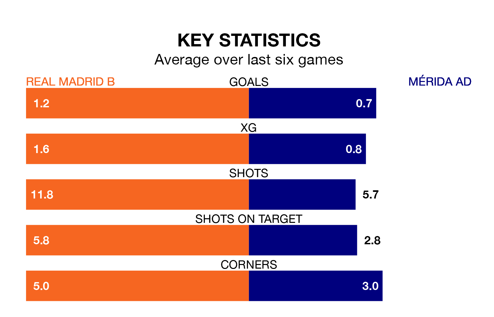

Real Madrid B are heavy favourites to keep all three points at home in Sunday's late kick-off against Mérida AD.
Madrid B, who sit 12th in Primera Division RFEF Group 2 with 22 games played, are priced at 1.5 to seal victory at the Estadio Alfredo Di Stéfano.
Sitting four places and 10 points behind them in the table, Mérida AD are 5.5 to win with *Betting Company*, while the draw is at 3.4.
With 15 goals in 22 games so far this season, Mérida AD are scoring at below the league average rate with 0.7 goals per game. And they are conceding more than average, letting in 28 goals at a rate of 1.3 per game.
Madrid B, meanwhile, are above average scorers, with 1.3 goals per game, compared to a league average of 1.1. They have conceded 1.2 goals per game.
The home team are in disappointing form in Primera Division RFEF Group 2, with one win and three draws from their last six games.
And also with a win and three draws over that period, the visitors' form is identical – they have both taken six points from 18.
In the last three years, Madrid B and Mérida AD have played each other on three occasions. Madrid B won one of them and they drew the other.
Their last meeting was on September 23, when Madrid B won 1-0 away.
Madrid B's last match was on February 4, a 2-0 loss against Ceuta.
Mérida AD drew 2-2 with Antequera CF last time out, also on February 4, with Daniel Sandoval Fernández on the scoresheet.
Updated: 11:18 (UTC), 08/02/24